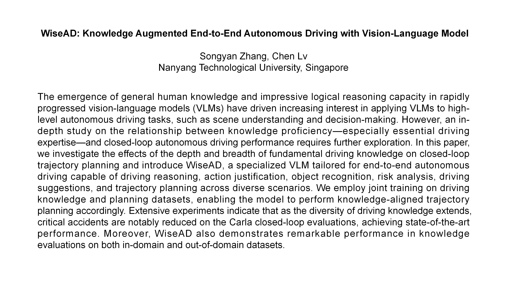
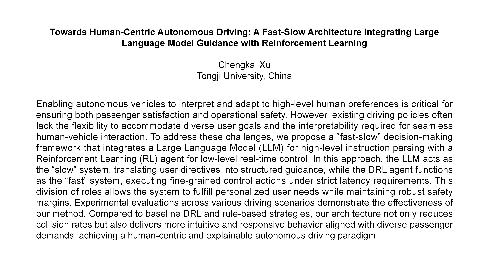
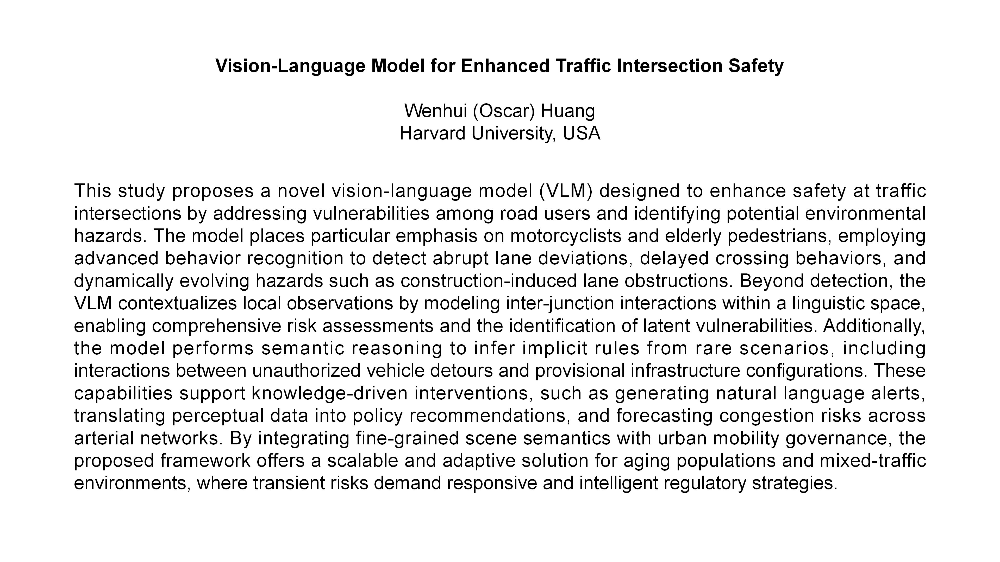
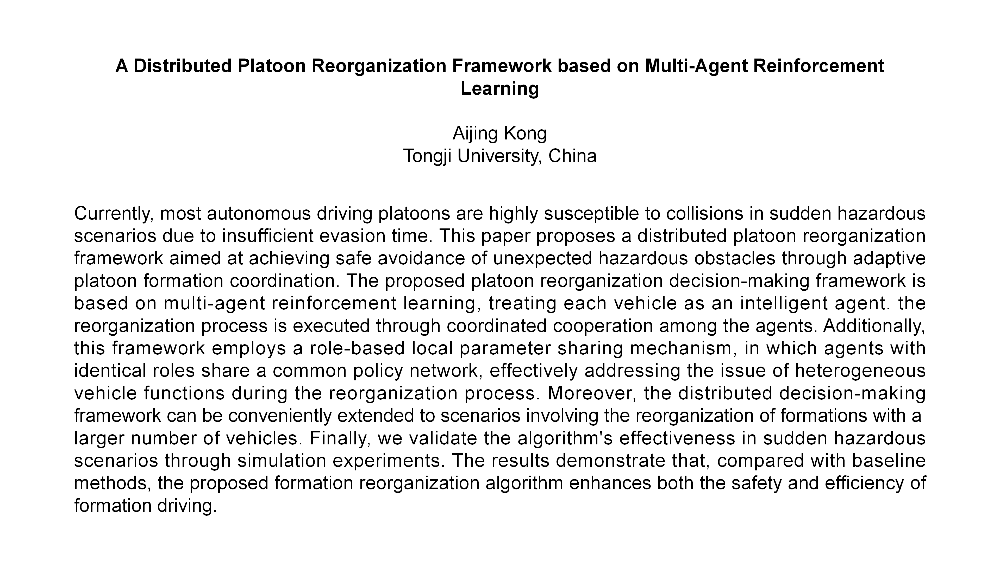
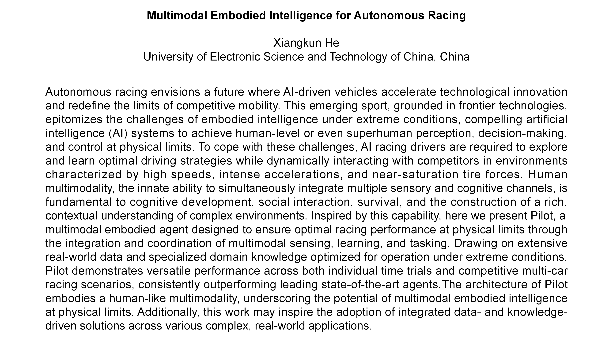
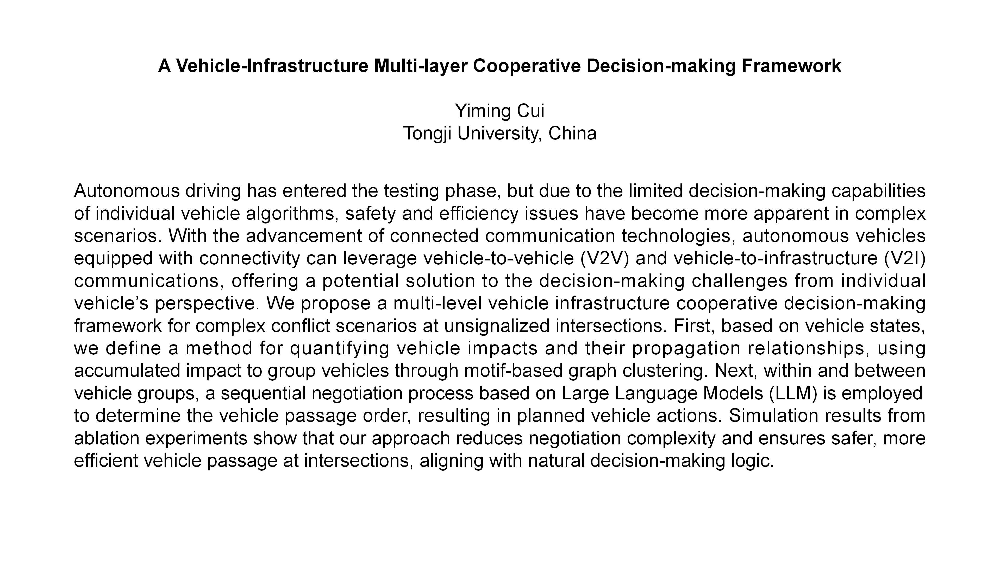

Call for Papers (Code:4315u)
Scope
This year's invited session continues the focus on foundation models, with a particular emphasis on large language models (LLMs) and vision-language models (VLMs) as emerging tools for advancing scene understanding, reasoning, and decision-making in autonomous driving and intelligent transportation systems (ITS). Recent developments in LLMs and VLMs have shown promising abilities in visual-linguistic reasoning, structured decision-making, and interpreting complex, multimodal inputs. These capabilities open new possibilities for improving the robustness, interpretability, and generalization of autonomous systems in diverse traffic environments. These models offer new pathways to incorporate general, human-like knowledge into machine perception and cognition, enabling more capable and context-aware autonomous systems. The session will explore a broad set of topics, including, but not limited to, multimodal perception, knowledge-driven planning, the development of traffic- and driving-specific LLMs/VLMs, integration of these models with reinforcement learning, and knowledge-assisted continual and lifelong learning. In addition, the session will highlight emerging directions such as vision-language-action (VLA) models, hybrid learning frameworks, and the integration of foundation models with traditional ITS methods.
This year's invited session continues the focus on foundation models, with a particular emphasis on large language models (LLMs) and vision-language models (VLMs) as emerging tools for advancing scene understanding, reasoning, and decision-making in autonomous driving and intelligent transportation systems (ITS). Recent developments in LLMs and VLMs have shown promising abilities in visual-linguistic reasoning, structured decision-making, and interpreting complex, multimodal inputs. These capabilities open new possibilities for improving the robustness, interpretability, and generalization of autonomous systems in diverse traffic environments. These models offer new pathways to incorporate general, human-like knowledge into machine perception and cognition, enabling more capable and context-aware autonomous systems. The session will explore a broad set of topics, including, but not limited to, multimodal perception, knowledge-driven planning, the development of traffic- and driving-specific LLMs/VLMs, integration of these models with reinforcement learning, and knowledge-assisted continual and lifelong learning. In addition, the session will highlight emerging directions such as vision-language-action (VLA) models, hybrid learning frameworks, and the integration of foundation models with traditional ITS methods.
Topics
- LLMs/LMs enhanced situational awareness, scene understanding, and reasoning.
- Foundation-model enhanced prediction, decision-making and control.
- Knowledge-distillation for autonomous driving.
- Embodied intelligence in autonomous driving and ITS.
- Explainable and interpretable autonomous driving.
- Human-in-the-loop AI and human–vehicle interactions.
- Driving safety validation and closed-loop evaluation.
- System safety and cyber security of foundation model-based systems.
- Simulation and real-world deployment of learning-based driving systems.
- LLMs/LMs enhanced situational awareness, scene understanding, and reasoning.
- Foundation-model enhanced prediction, decision-making and control.
- Knowledge-distillation for autonomous driving.
- Embodied intelligence in autonomous driving and ITS.
- Explainable and interpretable autonomous driving.
- Human-in-the-loop AI and human–vehicle interactions.
- Driving safety validation and closed-loop evaluation.
- System safety and cyber security of foundation model-based systems.
- Simulation and real-world deployment of learning-based driving systems.
Potential Papers






Organizer
Songyan Zhang
NTU
Wenhui Huang
Harvard

Yuxiao Chen
Nvidia
Peng Hang
Tongji
Zhiyu Huang
UCLA
Jian Sun
Tongji
Xiaoyu Mo
KTH
Chen Lv
NTU